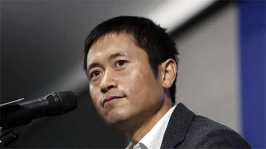
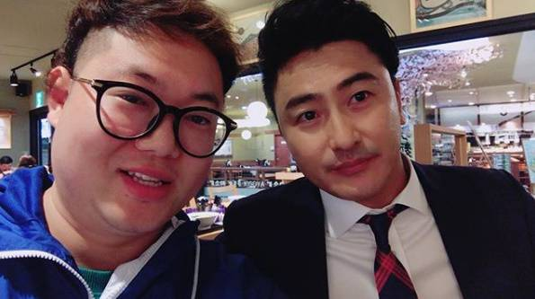
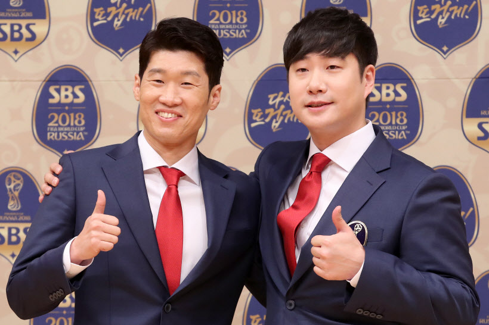

▲ 2018 러시아 월드컵을 앞두고 KBS는 이영표, MBC는 안정환, SBS는 박지성 해설위원을 선택했다.
지난 2014 브라질월드컵에선 지상파 3사 모두 간판 아나운서와 스타 해설진 등을 앞세워 홍보에 열을 올리며 시청자 눈길을 사로잡기 위해 안간힘을 썼다. 그 결과 KBS는 시청률 22.7%로 MBC(18.2%)와 SBS(11.6%)를 앞섰으며, 결승전에 이르기까지 KBS는 줄곧 1위 자리를 지키는 성과를 얻었다. 올해 2018 러시아 월드컵에서도 3사의 시청률 경쟁은 이어질 예정이다.
KBS
▲ 쪽집게 해설로 유명한 KBS 해설위원 이영표.
KBS는 지난 2014년 브라질 월드컵 때 이영표를 영입해서 시청률 1위를 했고 지금까지도 축구중계에서 시청률 1위를 차지하면서 재미를 보고 있다. 이광용(최승돈)-한준희 콤비도 여전히 건재하고 메인 캐스터였던 조우종이 프리로 나가면서 이재후 아나운서로 바뀐것과 '잠용수'라는 비아냥을 들었던 이용수 해설위원이 빠진게 오히려 업그레이드가 되었다는 평가이다. 그러나 현재 김태륭 해설위원에 대한 댓글 여론조작 논란이 일고 있어 어떻게 될지는 알 수 없는 상황이다. 아마 그대로 해설을 할 가능성이 높지만 축구팬들 사이에서 논란이 지속되고 있는 점은 분명하다.
MBC
▲ 디지털 해설로 파격 발탁된 인기 BJ 감스트와 MBC 해설위원 안정환.
MBC는 김성주와 송종국이 세트로 빠져서 시청률의 하락이 불가피한 듯 보였지만 디지털 해설 담당으로 인터넷 방송 평균 시청자 1위를 기록하고 있는 BJ 감스트를 데려왔다. 안정환의 입담과 감스트의 인지도를 고려했을 때 확실히 10대 20대 시청자들을 주요 타겟으로 삼겠다는 전략이 돋보인다. 또한 김성주의 빈자리를 메우기 위해 원래는 자사 캐스터를 메인 캐스터로 활용할 계획이었지만 평창올림픽에서 여론이 좋지 않은 것을 느꼈는지 작년에 프리랜서를 선언한 김정근을 복귀시켰다.
SBS
▲ 이번 월드컵에서 해설위원으로 데뷔하는 박지성과 SBS 아나운서 배성재.
SBS는 2014년 브라질 월드컵에서 시청률 꼴찌의 굴욕을 겪었다. 하지만 2015-2016 UEFA 챔피언스리그 결승전에서 객원해설을 맡은 바 있는 박지성이 합류할 가능성이 현재 매우 높아진 상황이다. 화제성과 신선함의 부분에서는 압도적일 뿐더러 배성재, 조민호, 이재형, 장지현, 박문성, 김동완 등 기타 중계진들도 프리미어리그로 인한 고정 시청층이 확보되어 있기 때문에 시청률 선전이 예상된다.